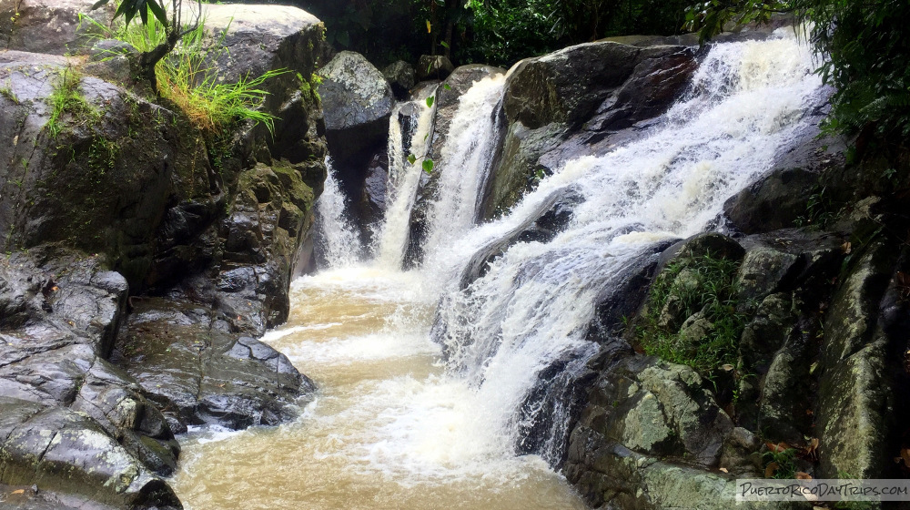

Los 7 Chorros
Llamado Siete Chorros por las siete pequeñas cascadas que se unen para formar una piscina natural, este lugar es imprescindible cuando se está en San Lorenzo.
Pueden visitar Los 7 Chorros en:
- Dirección: 4X8H+PJX, PR-745, San Lorenzo, 00754
Río la Playita del 9
“Playita del Nueve” es un río que adquiere nombre de playa por lo blanca y suave que es su arena. Este lugar cuenta con gazebos, quioscos y fogones. Aunque es un recurso natural pedregoso esta habilitado con tablados en la entrada y ruta al río, con rampas para personas con impedimentos, cumpliendo así con los requerimientos del Departamento de Recursos Naturales de la Región. Ya sea para pasar el día en familia, para darte un rico chapuzón o simplemente para meditar, puedes darte la vueltita.
Pueden visitar el Río la Playita del 9 en:
- Dirección: 42VC+JWR, PR-9912, San Lorenzo, 00754
Teatro Priscila Flores
Construido a principios del siglo XX, el Teatro Priscila Flores fue considerado el centro social del pueblo de San Lorenzo. Reconstruido dos veces, primero después del huracán San Felipe en 1928 y luego después de un incendio en la década de 1940, el teatro funcionó hasta 1984. En 1986, el municipio compró el teatro para preservarlo. Hoy en día, el teatro se puede alquilar para funciones/eventos privados.
Pueden visitar el Teatro Priscila Flores en:
Parque Acuático Piedra Dura

El Parque Acuático Piedra Dura está localizado en San Lorenzo. Es un parque que cuenta con atracciones para niños, jóvenes y adultos. Entre sus facilidades encontrarás: un zip line que cruza todo el parque, un área de chorritos para los chiquitos, barcos eléctricos que disparan agua, una roca de 24 pies para escalar y una piscina de 4 pies profundidad con capacidad para 200 personas, esta cuenta con una chorrera para niños
Pueden visitar el Parque Acuático Piedra Dura en:
- Dirección: PR-181, San Lorenzo, 00754